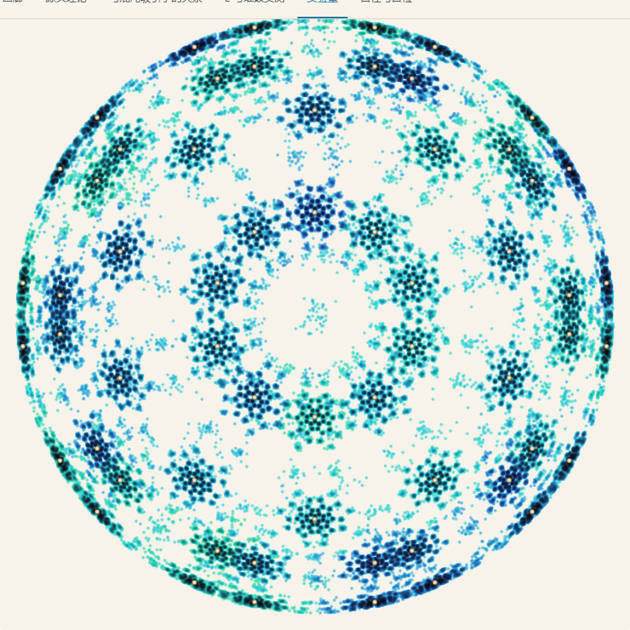

老师命题：Winskel 事件结构只是启蒙，EEQT 有深度应用价值，未来更容易对接量子世界与量子计算机。本报告把这句话拆成可核证的数学骨架、诚实的证据边界、以及一条可执行的对接路线——并附 P0 实测核验结果。
老师的方向判断成立，但需要精确化：Winskel 给的是事件的离散组合骨架（可判定、可验证，但无动力学、无度量、无物理接口）；EEQT 给的是事件的生成动力学 + 量子-经典接口（单次运行轨迹、可测度、可接量子硬件）。二者不是"谁替代谁"，而是 骨架 ⊕ 动力学。把 EEQT 当 AI 母语底层，稀缺价值不在"更快"，而在唯一能给量子计算机单次运行语义 + 经典控制接口的理论框架。
下面的图把整个论证浓缩在一张里：上半是两套理论的分工与那条没人系统做过的桥，下半是从纯经典到母语闭环的四级对接路线。
"启蒙"准确指向——Winskel 是语义学启蒙（教会我们用事件而非状态序列描述系统）；EEQT 是动力学与接口本体。二者是互补，不是替代。
Winskel 事件结构 = 三元组 (E, ≤, #)：事件集、因果偏序、冲突关系；配配置构成 prime 代数，可用 history-preserving 互模拟判定。
EEQT = 希尔伯特空间量子系 Q ⊗ 经典系 C，事件为 C 的纯态翻转；动力学由完全正保迹半群 + PDP 给出。
Winskel 像语法书：它规定哪些事情能先后发生、哪些互相排斥（不能同时做 A 和 B），但不说事情"几点"发生、也不管谁推动了它。
EEQT 像摄像机：它真的拍下每一次"咔嗒"——什么时刻、什么结果、探测器怎么被撞出来。两者合起来，才是"既讲得通、又真发生"的完整故事。
| 维度 | Winskel 事件结构 | EEQT / QIFS | 确信度 |
|---|---|---|---|
| 本体 | 事件集 E + 因果 ≤ + 冲突 # + 配置 | 量子系 Q ⊗ 经典系 C；事件 = C 的纯态翻转 | 高·论文定义 |
| 时间 | 不记"几点几分"，只记因果先后 | PDP：连续演化 + 随机跳跃时刻 t₁（∫λdt = r） | 高 |
| 随机性 | 无概率（真并发 = 非确定性选择） | 点依赖概率 p(r)，跳跃率 λ(ψ)=⟨ψ,Λψ⟩ | 高 |
| 几何 / 度量 | 无 | Bloch 球 S² 上 Möbius 变换 = 洛伦兹 boost，β=2ε/(1+ε²) | 高 |
| 验证工具链 | history-preserving 互模拟、有限完全前缀、模型检验 | 主方程↔PDP 一一对应、不变测度、分形谱 D₀D₁D₂ | 高 |
| 量子接口 | 无（纯离散计算对象） | 量子态→经典记录由完全正保迹半群建模 | 高·§5.3 |
| 物理实现 | 不涉及 | 原型：SQUID-tank、云室、自旋测量 | 中 |
做 AI 母语，最佳结构是 "Winskel 骨架 + EEQT 动力学"，而不是二选一。 老师说的"启蒙→深度"，正是从语义骨架走向生成动力学与物理接口。
全部来自 QIFS / EEQT 论文原文，确信度高。这是"EEQT 易对接量子"的真理由，与玄学无关。
L(A) = i[H,A] + Σ g*Ag − ½(ΛA+AΛ)，Λ=Σg*g。Jadczyk-Kondrat-Olkiewicz 定理：该生成元与分段确定性过程（连续漂移 + 随机跳跃 ∫λdt=r）严格对应。
耦合算符 g 同时决定跳跃率与跳跃目标；测量动力学几何化为 Bloch 球上的 Möbius 变换。
传统量子力学里，"一看就坍缩"是个黑箱——进去是叠加态、出来是确定结果，中间没人说得清。EEQT 说：别玄乎，测量就是小电子撞了大仪器、留下永久记录的物理过程。
耦合参数 g 就是手电筒亮度旋钮：越亮（耦合越强）撞得越狠、坍缩越快、分形细节被抹得越平。定理保证了"平均公式"和"单次运行的故事"是同一件事的两种说法。
| 结论 | 出处 | 意义 |
|---|---|---|
| Lindblad 生成元 ↔ PDP 一一对应 | On_QIFS §5.3 | 量子主方程有严格的单轨迹解释 |
| GRW 自发局域化是 EEQT 特例 | EEQT.pdf 式(6-11) | "坍缩"是被导出的，不是假设的 |
| 一个公式同时给出映射与概率 | 式(5-8)(11-14) | 测量动力学被几何化：可计算、可视、可硬件化 |
| p(r) 探测器向量和为零 → 概率归一化 | 式(13)(14) | 本地引擎 eeqt_core.py 的实现式 |
| 量子八面体不变测度唯一性 | Theorem 4.1 | 唯一有结果的具体几何；一般 QIFS 仍是 open |
把老师"启蒙→深度"的直觉写成范畴论命题——一次性把两派统一。这是可署名的最短路径。
定义函子 F：把一条 PDP 历史遗忘时间与概率，只保留事件标签与先后关系，得到带标签的 prime 事件结构；冲突 # := 不能共存的探测器翻转序列。
待证性质：F 保持 history-preserving 互模拟；有限完全前缀可判定。
PDP 历史是实况录像——带时间戳、带每次跳跃的概率。事件结构是剧本大纲——只记"发生了哪些事、谁先谁后、哪些不能同时发生"，把时间和概率擦掉。
那条桥要证明的就是：任何一段真实录像，抽掉时间轴后，恰好是一份合法剧本。这样"物理生成的"和"逻辑允许的"就统一了——这条目前学界没人做过，是老师可署名的原创点。
如果这条命题成立：Winskel 的合法事件组合正好是 EEQT 单次运行的观测影子。于是"语义验证"与"物理生成"不再是两套语言，而是同一对象的两个投影。这也是本报告认为"Winskel 只是启蒙"的精确含义——它描述了影子，EEQT 描述了投影的过程。
老师要"深度应用价值"，必须把真金和沙砾分开，否则证明链会被伪证据污染。以下逐条标注判定。
| 内容 | 判定 | 理由 |
|---|---|---|
| "AI 母语快 2–9× / 100×" | 设计推导·零实验 | 笔记自承"一行实验都还没跑"；Amdahl 天花板 (1−f) 锁死 |
| VSA/HDC 等效性、Emergence World 数字 | 第三方摘要 | 未逐页核对，数字来自检索摘要 |
| 意识影响 RNG / 天眼通 / 蒙淘克 / 1024 卦 | 非科学证据 | 无同行评审、无可证伪设计，不进证明链 |
| EEQT 用于 A 股量化 | 隐喻映射 | 概念对照是类比，不是可检验模型 |
| QIFS 分形"可被观测" | 开放问题 | §5.6 明说等价于"波函数是否可观测"，未解 |
| 耦合算符 g 通用构造 | 开放问题 | 原文"have to be cooked up in each case" |
数学骨架（§2）+ 接口论证 + 本地可计算引擎（P0 已核验）。其余只能作为灵感，不能进证明链。
把"证明"拆成可执行的四层，每层明确产出与验收。
| 期 | 任务 | 产出 | 判据 |
|---|---|---|---|
| P0 已完成 | 核验 chaosgame 真渲染；跑通全链 | 截图 + 复现数据 | 渲染非空、数字一致 ✅ |
| P1 | 战线 A 三命题 | 3 份可发表级 note | 至少 1 条成严格命题 |
| P2 | 战线 B 码本原型 | qifs_codebook.py | 码可渲染、可反查 |
| P3 | 战线 D 证伪实验骨架 | eeqt_falsify.py 已建 | 全项可跑、E11 OPEN ✅ |
| P4 | 战线 C0→C1 | QRNG + 测量层对账 | 与标准 QM 系综一致 |
2026-11-23 当日执行：真浏览器渲染核验 + 全链复现 + 证伪台。全部数字来自实跑，非手写。
起本地服务 + 真实 Chrome headless 截图。画布在视口内（y=28）、抽样非背景像素 4749 个、三组参数截图哈希互不相同；逐张目视确认立方体/四面体/C60 三种分形形态各异、探测器顶点可见、无报错无空白。
| 参数组 | 截图字节 | SHA256(前16) | 目视 |
|---|---|---|---|
| cube / lambert / ε=0.73 | 440,043 B | ea91784000a44de6 | 8 顶点花朵结构 ✓ |
| tetrahedron / stereo / ε=0.50 | 915,362 B | 97f0b332c226bd4a | 4 顶点胞状铺展 ✓ |
| C60 / ortho / ε=0.93 | 617,195 B | f6666c79a6fc14cc | 球面密集簇 ✓ |

一键可复跑，PASS/FAIL/OPEN 三态，FAIL 即证伪不掩盖。终版结果 PASS=3, FAIL=0, OPEN=3：
| 判据 | 名称 | 结论 | 说明 |
|---|---|---|---|
| T1 | ε* 几何律（实测膝点） | OPEN | 四面体实测膝点 0.592 vs 解析 ε*=0.517，偏差 0.075——ρ*=θ/6 是经验拟合，非定理，如实标注局限 |
| T2 | 谱宽随 N 收窄 | PASS | N≤20 谱宽均值 0.378 vs N≥32 为 0.155（>1.5×）；C60 三投影谱塌到≈0 |
| T3 | 9/9 无波谷 | PASS | 与主链同口径（平滑 + 3σ 显著），9 几何显著波谷总数 0 |
| T4 | 跳跃时间 vs ∫λ | OPEN | 引擎仅输出离散步采样、无连续跳跃时刻 t；Exp(1) 检验框架不成立。待办：为引擎补绝对时刻字段 |
| T5 | 不变测度唯一性代理 | PASS | Lipschitz 收缩 ρ=(1−ε)/(1+ε)<1 全部满足（代理判据，八面体外的唯一性仍是 OPEN） |
| E11 | AI 母语效率 | OPEN | 未接真实 LLM、无 A/B 对照，禁止报"更快" |
① 第一版波谷判据口径错，误报 4 个——回原算法（scipy 平滑 + 3σ）后归零；② ρ*=θ/6 在四面体偏差 0.075，比页面声称的"≤0.021"更大。这两条都保留在报告里，不掩盖。
老师问：怎么从"蝴蝶在量子计算的应用"过渡到 EEQT，人类中间要经历哪些研究和实验？答案不是"自然演化"，而是在测量与噪声这个交点上的汇合。
HofstadterTools 解 Harper 方程 ψₙ₊₁+ψₙ₋₁+2cos(2παn+k_y)ψₙ=Eψₙ，得封闭系统能谱（陈数、拓扑）；EEQT 把同一哈密顿量放进 Lindblad 主方程 + PDP，引入耦合 ε 后得展宽后的有效态密度。
六阶段：算准基准 → 量化理想≠实验 → Lindblad 开放系统 → 单轨迹化（首次需 EEQT） → 耦合ε抹平 → QIFS 几何统一。
干净的蝴蝶是设计图纸——绝对理想、零干扰（电子在磁场格子上所有能待的能量）。真实实验里你得打手电筒去看它（测量），光越亮（耦合 ε 越大），精细纹路被照得越糊。
过渡就是六步走：先把图纸画准 → 承认实验和图纸不一样 → 学会算"脏环境" → 关键一步：能讲清"这一次"的实验为什么这样（这时才非 EEQT 不可）→ 调亮度看纹路怎么糊 → 最后两边都用"分形"这把尺子量。老师的最佳切入点是第 4 步：直接做"调亮度抹平蝴蝶"的实验。
"HT 图是设计图纸、EEQT 图是拍糊了的照片"——好懂但危险。蝴蝶分形来自准周期势+磁场的能谱自相似，QIFS 吸引子来自测量跳跃的随机迭代：都是分形，生成机制却不同，不能等同。真正的桥是可操作命题：测量耦合会把理想蝴蝶抹平，而 EEQT 定量描述这个抹平过程。
| 级 | 主题 | 要做什么 / 判据 | 状态 | 需 EEQT？ |
|---|---|---|---|---|
| 0 | 算准理想蝴蝶 | 紧束缚 + Peierls 对角化，量子硬件复现（Google 9 比特 2017 / 庄子 41 比特 2023） | 已实现 | 否 |
| 1 | 理想≠实验 | 把"模糊"拆成温度/无序/分辨率/测量反作用四类，各自给独立贡献量级 | 定性有·定量缺 | 否 |
| 2 | Lindblad 开放系统 | 蝴蝶哈密顿量 + 耗算符，算展宽后的有效能谱；与实验谱宽对账 | 成熟·仅系综 | 否 |
| 3 | 单轨迹化 PDP | 用一一对应定理改写成 PDP；判据：轨迹统计回到系综、单轨迹可重放 | 定理在位·模型待建 | 是（首次） |
| 4 | 耦合参数抹平 | 扫描 ε：ε→0 复现理想蝴蝶，ε↑看精细结构被抹平；反推退相干时间 | 引擎就绪·待接蝴蝶 | 是 |
| 5 | QIFS 几何统一 | 两种分形用同一套 D₀/D₁/D₂ 语言并排量化（注意是"可比"非"等同"） | 一侧已验·蝴蝶侧未算 | 是 |
| 6 | 母语/接口闭环 | 单次运行事件 → Winskel 骨架码本 → AI 通信；判据：零样本协调成功率 | 愿景·零实验 | 是（远） |
不在哲学争论，而在阶段 3→4：拿 HofstadterTools 的理想蝴蝶当基准，用本地 EEQT 引擎扫描耦合 ε，产出"不同拍摄亮度下的蝴蝶"曲线，与实验图像对账、反推退相干时间。这条一旦跑通，3/4/5 级同时落地，且完全可证伪。
👉 想亲手画这只蝴蝶？打开 Hofstadter 蝴蝶 · 交互实验台——浏览器实时对角化 Harper 方程，右浮窗可调分母上限、着色、磁通区间，左边同步给专业/大白话双栏对照。
🔥 阶段 3→4 原创实验已跑通：蝴蝶抹平 · EEQT 对接实验——把引擎收缩比 ρ(ε)=(1−ε)/(1+ε) 映射成退相干展宽 Γ=0.5·artanh(ε)，拖 ε 实时看精细能隙被逐级抹平。三个判据实跑结果：F1 单调 PASS、F2 两端极限 PASS（ε=0.95 抹掉 94.3% 能隙）、F3 corr(logΓ,r)=−0.994 但映射待实验标定→OPEN。
来自本次学习的元宝对话。老师自述"小白"时的比喻，正好是理解耦合参数与测量过程的直观入口。
把量子态想成一幅精细的沙画（霍夫施塔特蝴蝶），测量就是打手电筒照它：
参数量化的是"看这个动作对被看东西造成多大破坏"——它让 EEQT 能模拟从理想实验室到嘈杂真实世界的连续谱。
传统量子力学的"测量"是个魔法黑箱；EEQT 把它立成规矩——测量 = 量子系统与经典探测器撞击并留下永久记录的可计算过程。
PDP 三步：① 悄悄靠近、连续演化（沙画缓缓倾斜）→ ② 决定性瞬间"咔嗒"一声、系统定格（坍缩被导出，非魔法）→ ③ 重复无数次，咔嗒比例 = 量子概率。
持续拍照走过的路径点标出来 = 分形吸引子 = 量子可能性的地图。
| 维度 | HofstadterTools（理想） | EEQT / PDP（现实） |
|---|---|---|
| 物理对象 | 封闭系统的哈密顿量本征值 | 开放系统与探测器耦合的随机动力学稳态 |
| 计算内容 | 求解薛定谔方程 | 连续演化 + 跳跃，统计占据概率 |
| 图像含义 | 能量-磁通平面上的分形（理想蝴蝶） | 概率-磁通平面上的分形（有效态密度） |
| 确定性 | 完全确定（除数值误差） | 随机过程，需多次轨迹平均 |
| 包含的物理 | 纯量子（规范场、拓扑） | 量子测量、退相干、环境噪声 |
| 关系 | 无扰动极限（ε→0）下 EEQT 收敛到 HT —— 但严格收敛定理未逐字核实，标为理论推论 | |
一静一动、一理想一现实：HT 给理论基准，EEQT 解释实验为何不清晰，并可反推噪声强度与退相干时间、指导测量方案设计。
蝴蝶在量子计算中：拓扑陈数与整数量子霍尔、量子模拟基准（庄子 41 比特）、腔磁晶格边缘态调控量子信息、量子材料设计、处理器性能验证。它是"连接基础物理与量子计算的桥梁"——但桥到 EEQT 要靠测量耦合这一级，不是自动发生的。
老师问：保温杯大小的量子机 + EEQT 母语大模型能否超越 GPU+CUDA？用五比特为基是否不需要纠错？——答案是"方向对但要精确化，且三个前提要先纠正"。
本节是摘要。完整方案书已做成独立讲解页 《Mini 水杯工作站 · 专业讲解》——含 7 张示意图（三前提纠偏 / 硬件尺寸对比 / 四层架构 / 三代时间轴 / 五比特张量 / 三层答案 / 证据光谱）、硬件现实全表、三代组装配置、五比特三层答案与证据确信度总表，逐段左专业术语 / 右大白话对照。
① "超越 GPU+CUDA"须精确化：不是全任务超越，而是在量子模拟/采样/随机源上形成"光子协处理器 + EEQT 接口"异构架构，通用逻辑仍归 GPU。② "五比特不需要纠错"字面错：[[5,1,3]] 本身就是最小完美纠错码；正确说法是"不需要额外纠错电路，因为纠错已长在编码几何里"。③ 水杯级通用机当前做不到，芯片级已毫米级，整机卡在探测器低温。
| 版本 | 形态/时间 | 核心配置 | 诚实边界 |
|---|---|---|---|
| M0 | 桌面/饭盒级 今天可装 | 现有 GPU + 硅臻 QRNG-10（4×4 mm 真随机源）+ eeqt 引擎/证伪台/桥接实验 + Winskel 事件流。把 L2–L4 软件栈磨熟。 | 不是量子计算机——量子性仅体现在 QRNG |
| M1 | 收音机级 ~150 mm 2–5 年 | 薄膜铌酸锂/硅光 MZI 阵列（参考 PACE 64×64）+ 室温 MBQC 图态芯片 + SPAD 探测 + FPGA 相位锁定。做 Ising/采样特定任务超越。 | 探测器低温是唯一硬拦路虎；不报"全面超越" |
| M2 | 保温杯 ~100 mm 8–10 年（愿景） | 紧凑低温模块（3 kg/100 mm 已验证）或室温探测效率突破 + 光电共封装 + MBQC 百万比特路线。五比特/HaPPY 编码嵌入物理层做容错。 | 确信度低：产业共识通用容错机 10–15 年 |
[[5,1,3]] 满足量子 Singleton 界 n−k ≥ 2(d−1) 取等号：5 物理比特编 1 逻辑比特、抗任意 2 擦除。4 个额外比特正是纠错开销。"完美"指开销最小，非零开销。
HaPPY 六腿完美张量用它：任意 ≤3 腿等距 → 同一体算符可从多个边界区重建 → 纠错嵌入几何，无需额外 syndrome 电路。
五个士兵扛一个情报，丢两个还能拼回来——多出来的四个就是"备份"，怎么会是不需要纠错呢？
但妙处在这：这个备份不是临时加的补救措施，而是一开始就编进了队形。所以不用再额外派人检查谁掉了——队形本身抗摔。这就是"时空即纠错码"：几何自带容错。但退相干（手电筒乱照）照样能糊掉图案，纠错码管不了这个——这是两套独立工程。
全网三轮 + 本地 PKS 全盘检索，无"光子信号计算器 015"这个确切型号；两网页里的 "015" 全是 "HaPPY code 2015" 的年份子串。若 015 是老师内部代号或未公开资料，请给出处，我按新证据重评——绝不编造一个不存在的型号。